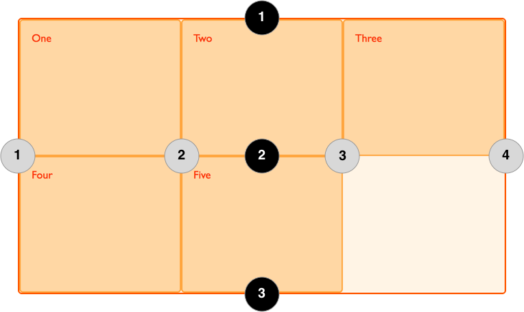

CSS Grid Introduction
CSS Grid Layout introduces a two-dimensional grid system to CSS. Grids can be used to layout major page areas or small user interface elements. This article introduces the CSS Grid Layout and the new terminology that is part of the CSS Grid Layout Level 1 specification.
This text is taken from Mozilla Developer Network and all coyright is on there.
What Is A Grid
A grid is an intersecting set of horizontal and vertical lines – one set defining columns and the other rows. Elements can be placed onto the grid, respecting these column and row lines. CSS grid layout has the following features:
- Fixed and flexible track sizes
- Item placement
- Creation of additional tracks to hold content
- Alignment control
- Control of overlapping content
You can create a grid with fixed track sizes – using pixels for example. This sets the grid to the specified pixel which fits to the layout you desire. You can also create a grid using flexible sizes with percentages or with the new fr unit designed for this purpose.
You can place items into a precise location on the grid using line numbers, names or by targeting an area of the grid. Grid also contains an algorithm to control the placement of items not given an explicit position on the grid.
You can define an explicit grid with grid layout but the specification also deals with the content added outside of a declared grid, which adds additional rows and columns when needed. Features such as adding “as many columns that will fit into a container” are included.
Grid contains alignment features so that we can control how the items align once placed into a grid area, and how the entire grid is aligned.
More than one item can be placed into a grid cell or area, they can partially overlap each other. This layering may then be controlled with z-index property.
Grid is a powerful specification and when combined with other parts of CSS such as flexbox, can help you to create layouts that were previously impossible to build in CSS. It all starts by creating a grid in your grid container.
The Grid Container
We create a grid container by declaring display: grid or display: inline-grid on an element. As soon as we do this all direct children of that element will become grid items. In this example, I have a containing div with a class of wrapper, inside are five child elements.
<div class="wrapper">
<div>One</div>
<div>Two</div>
<div>Three</div>
<div>Four</div>
<div>Five</div>
</div>
I make the .wrapper a grid container.
.wrapper {
display: grid;
}
The above code would give a grid that is 1 column wide with 5 rows
All the direct children are now grid items. In a web browser, you won’t see any difference to how these items are displayed before turning them into a grid, as grid has created a single column grid for the items. As you learn and then work with the CSS Grid Layout this tool will give you a better idea of what is happening with your grids visually. If we want to start making this more grid-like we need to add column tracks
Grid Tracks
We define rows and columns on our grid with the grid-template-columns and grid-template-rows properties. These define grid tracks. A grid track is the space between any two lines on the grid. In the below image you can see a track highlighted – this is the first row track in our grid.

I can add to our earlier example by adding the grid-template-columns property, then defining the size of the column tracks.
<div class="wrapper">
<div>One</div>
<div>Two</div>
<div>Three</div>
<div>Four</div>
<div>Five</div>
</div>
.wrapper {
display: grid;
grid-template-columns: 200px 200px 200px;
}
I have now created a grid with three 200-pixel-wide column tracks. The child items will be laid out on this grid one in each grid cell.
Further details can be found on the Mozilla Developer page for te grid funcitonality
Grid Lines
It should be noted that when we define a grid we define the grid tracks, not the lines. Grid then gives us numbered lines to use when positioning items. In our three column, two row grid we have four column lines.
Lines are numbered according to the writing mode of the document. In a left-to-right language, line 1 is on the left-hand side of the grid. In a right-to-left language, it is on the right-hand side of the grid. Lines can also be named, and we will look at how to do this in a later guide in this series.
Positioning items against lines
We will be exploring line based placement in full detail in a later article. The following example demonstrates doing this in a simple way. When placing an item, we target the line – rather than the track. In the following example I am placing the first two items on our three column track grid, using the grid-column-start, grid-column-end, grid-row-start and grid-row-end properties. Working from left to right, the first item is placed against column line 1, and spans to column line 4, which in our case is the far-right line on the grid. It begins at row line 1 and ends at row line 3, therefore spanning two row tracks. The second item starts on grid column line 1, and spans one track. This is the default so I do not need to specify the end line. It also spans two row tracks from row line 3 to row line 5. The other items will place themselves into empty spaces on the grid.<div class="wrapper">
<div>One</div>
<div>Two</div>
<div>Three</div>
<div>Four</div>
<div>Five</div>
</div>
.wrapper {
display: grid;
grid-template-columns: repeat(3, 1fr);
grid-auto-rows: 100px;
}
.box1 {
grid-column-start: 1;
grid-column-end: 4;
grid-row-start: 1;
grid-row-end: 3;
}
.box2 {
grid-column-start: 1;
grid-row-start: 3;
grid-row-end: 5;
}
Further details can be found on the Mozilla Developer page for the grid funcitonality